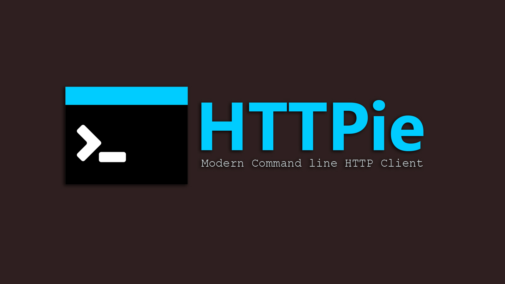

HTTPie 是一个用于与 HTTP 服务器进行交互的命令行客户端。

概览
HTTPie（发音为 H-T-T-派）是一个基于命令行的 HTTP 客户端，可以提供更加人类友好的命令行交互，HTTPie 可用于测试、调试以及与 HTTP 服务器进行交互。
HTTPie 提供了一个 http 命令，这个命令可以使用简单自然的语法发送任意 HTTP 请求，并以精美的彩色输出作为响应结果。
在这篇文章中，我们将学习如何使用此工具访问 REST 服务。
功能
作为一个现代化命令行工具，HTTPie 提供了如下功能：
- 简单、直观的 HTTP 命令语法
- 漂亮的格式化输出
- 天然的 JSON 支持
- 表单和文件上传
- 支持自定义 HTTP 头
- 主流操作系统支持 —— Linux、macOS、Windows
- 通过插件扩展额外功能
在后边的文章中，你将看到这些功能的介绍。
安装
可以通过多种方式来安装 HTTPie。
macOS
1 | brew install httpie |
Linux（Ubuntu）
1 | apt-get install httpie |
Windows
1 | pip install --upgrade pip setuptools |
或者
1 | easy_install httpie |
使用
现在 HTTPie 已经安装在了本地电脑上，可以来调用各种 HTTP 接口。
后边的文章中，我将会使用下边三个网站来演示相关功能：
- http://example.org/ 一个示例网站，用来演示基本的 HTTP 命令
- http://httpbin.org/ 一个简单的 HTTP 请求、响应服务
- https://jsonplaceholder.typicode.com 一个可以提供模拟 REST API 调用的网站
调用 http
HTTPie 提供 http 命令来访问 HTTP 服务器。以下是 http 命令最基本的用法，返回了 HTTP 响应头和其他服务器信息。
1 | ➜ http httpie.org |
获取数据
最常见的 HTTP 操作是从服务器检索信息，通常通过 HTTP GET 方法来实现。HTTP GET 请求的查询参数是可选的。
下边是一个 HTTPie 的 GET 方法示例（无查询参数）：
1 | http GET http://httpbin.org/get |
但是，不带查询参数的 GET 请求很少见。可以通过在原始请求后边追加 param==value 的方式来添加参数。
下边的示例演示了如何在 GET 请求中携带参数。我们来获取 userId 为 1 的所有帖子。
1 | ➜ http https://jsonplaceholder.typicode.com/posts userId==1 |
下边是多个参数的例子：
1 | ➜ http https://jsonplaceholder.typicode.com/posts userId==1 id==9 |
在 HTTP 请求头中携带信息是很常见的做法，在 HTTPie 中我们可以使用 Header:Value 格式添加 HTTP 请求头，如下所示：
1 | http example.org X-Foo:Bar Sample:Value |
发布和更新数据
HTTP 的 POST 方法通常用于在服务器上创建资源，下边的示例演示了如何使用内联方式提供 JSON 数据并发送 POST 请求，注意：非字符串类型参数的格式为 Param:=Value。
1 | ➜ http POST https://jsonplaceholder.typicode.com/posts title=foo body=bar userId:=9 |
HTTPie 允许我们将 JSON 数据存入文件中，并在命令行中指定这个文件的路径。
1 | ➜ cat data.txt |
HTTP PUT 方法通常用于更新服务器中已存在的资源，用法和 POST 类似：
1 | ➜ http PUT https://jsonplaceholder.typicode.com/posts/10002 data=@data.txt |
删除数据
HTTP DELETE 方法用于删除 HTTP 服务器中的资源，示例如下：
1 | ➜ http DELETE https://jsonplaceholder.typicode.com/posts/1 |
通过 HTTPie 进行认证
上边的示例中我们演示了 HTTPie 的核心用法，在这些示例中，我们假设资源都是可以在不需要任何身份认证的情况下就能够访问的。但在实际场景中很少有这种情况，大多数服务都有安全防护，并强制要求它的用户在访问资源前进行身份认证。
现代化 HTTP 客户端程序为多种认证模式提供了很好的支持，HTTPie 也不例外，支持主流如：Basic、摘要、密码等认证类型。
使用 Basic 认证访问资源
HTTP Basic 认证是 HTTP 协议中的身份验证方案。在 Basic 认证中，HTTP Authorization 请求头设置为 Basic，用户名和密码以明文形式提供。Basic 认证总是需要配合其他安全机制，如：HTTPS。
以下示例演示如何访问一个要求用户通过 Basic 认证来进行身份验证的资源：
1 | ➜ http --default-scheme=https https://httpbin.org/basic-auth/username/password |
可以看到，请求在未提供用户名和密码的情况下，服务器的响应状态码为 401 UNAUTHORIZED。HTTPie 通过以 -a username:password 的方式提供 Basic 认证所需要的用户名密码：
1 | ➜ http --default-scheme https https://httpbin.org/basic-auth/username/password -a username:password |
使用摘要认证访问资源
Basic 认证的主要问题是它将用户名和密码以明文的方式发送至服务器。摘要认证略有不同，在摘要认证而非明文模式中，它采用基于哈希的方法与服务器传递凭据。
以下是摘要认证的流程：
- 客户端请求一个需要认证的页面，但是不提供用户名和密码。
- 服务器返回
401 Unauthorized响应代码，并提供认证域(realm)，以及一个随机生成的、只使用一次的数值，称为密码随机数 nonce。 - 客户端以上一步中得到的随机数（nonce）、用户名、密码和 realm 的哈希值作为响应
- 服务器利用这些信息对客户端进行身份验证，如果身份验证成功，则返回客户端所请求的资源
HTTPie 使用 -A 摘要标志 并通过 -a 参数提供相应的用户名和密码即可进行摘要认证，如下所示：
1 | ➜ http --default-scheme https -A digest -a aa:bb https://httpbin.org/digest-auth/auth/aa/bb |
插件方面，HTTPie 还支持其他身份验证机制，如：jwt-auth、OAuth 等。
总结
HTTPie 是一个轻量但强大的工具，可以轻松与 HTTP 服务器通信。通过 http 命令并配合合理参数调用各种 HTTP 方法的能力使其成为 RESTful 和微服务生态的理想选择。